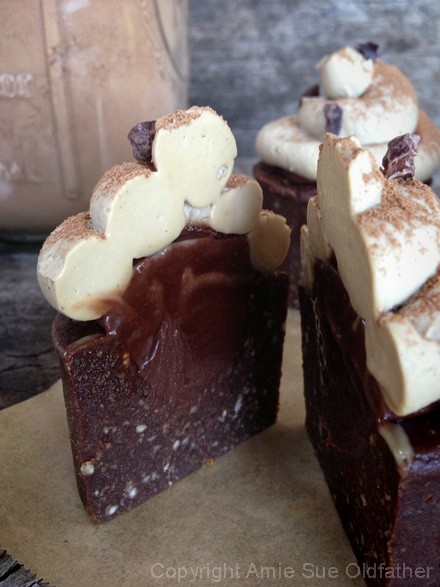
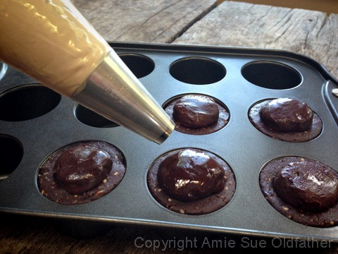
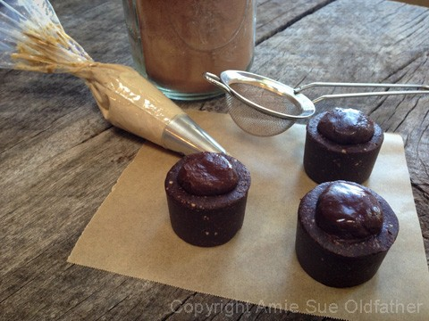

Chocolate Ganache Filled Cupcakes with Espresso Frosting
~ raw, vegan, gluten-free ~
My take on a molten chocolate cake… without the… molten. Lol, I really didn’t start out with a molten styled dessert in mind, it was after the fact when I looked at the picture with the cupcake sliced in half.
The center ganache wasn’t about to ooze out anywhere. I think I heard it whisper, “I think I can, I think I can.” But it didn’t. Not even after 8 hours of sitting on the kitchen counter… the ganache held its ground.
Why was this luscious little nugget of joy sitting out on the counter for 8 hours? I was testing how it would hold up to room temperatures. I try to do this with just about everything I make.
Do keep in mind with this recipe, as well as any, your results may vary, from how you made the recipe, the room humidity, and of course the temperature. So with my test, with room air being around 70 degrees (F), it held up perfectly for 8 hours. The frosting did start to darken a little but other than that, no complaints.
This makes it a great treat to make for parties because you can put them out on the table and not fear the meltdown. BUT again, lots of warm bodies in a room will raise the air temp, which can affect your desserts.
Bob enjoyed these so much that he shared them with some guys we had working outside and if I witnessed it right… I think he was even following the cable man, who was fixing our system, with a sample. I got orders to make more. Good thing I know the chef and have the recipe. :)
I cut one in half so you could see the inside. I am not sure why, but it cracks me up… the frosting looks like hair rollers to me, all piled high on the cupcake. haha
For a layer of flavor, I used mesquite powder, which is also known as mesquite flour or mesquite meal. It has a molasses-like taste with a hint of caramel. Not only does it add great flavor to the cupcake, but mesquite flour is also high in protein and soluble fiber. Now granted, I didn’t use an abundant amount, but every little bit in the right direction helps.

Ingredients:
Yields 1 1/4 cups batter
Cupcakes:
Chocolate Ganache:
Espresso Buttercream Frosting
Topping:
- Dust with raw cacao powder
- Sprinkle with raw cacao nibs
Preparation:
Cupcakes:
- If the dates are hard and tough, in a small bowl, rehydrate by adding enough hot water to cover them.
- Remove the pits and inspect each date for any unwanted guests.
- Soak for 10+ minutes, or until soft.
- Once done soaking, discard the soak water and hand-squeeze the excess water from them. Set aside.
- In a food processor, fitted with the “S” blade, process the almonds until they are a small mealy size.
- They won’t break down into a fine powder, due to their natural oils.
- Be careful not to over-process; this will lead to the almonds releasing too much of their natural oils and this will make the cupcakes oily feeling.
- Add the cacao, mesquite powder, and salt. Pulse together just enough to combine.
- Remove the lid to the food processor and place the dates around the inside of the bowl. Don’t lump them all in one spot. Drizzle the coconut oil around as well.
- Return the lid and process until the batter starts to form a ball.
Chocolate ganache:
- Chill the ganache, so it is firm. If need be, place in the freezer for 30-60 minutes.
Espresso Buttercream Frosting:
- Place the frosting in a piping bag fitted with a medium-sized circular tip. Work out any air bubbles before you start piping.
- If the frosting is too stiff to work with, allow it to warm a bit in room air. If the frosting is too soft, place it back in the fridge to firm up.
Assembly:
- To form the cupcakes, I used the Norpro nonstick small cheesecake pan. Press the batter into the cavity, leveling it off at the top.
- Remove about 1 tsp of batter from the center.
- With a spoon, scoop out about 1 tsp of ganache, give or take depending on the cavity size that was created. Place the cavity. It is ok if some spills out on top. See photo below.
- Start piping the frosting, working from the outside to the inside.
- Sprinkle with cacao powder and nibs!
- Keep the cupcakes chilled. I tested these sitting on the counter. After 8 hours, everything was holding up great except the frosting started to darken in color.
- Keep for 5-7 days.

I wanted to share these two photos with you so that you could see what they looked like
before they got all dolled up.

© AmieSue.com